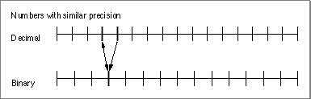
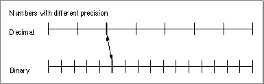

Converting Between Binary and Decimal Numbers
PowerPC Numerics automatically converts between binary and decimal numbers, and some implementations allow you to perform such conversions manually. This section describes when conversions between binary and decimal numbers are performed and how they are performed.Accuracy of Decimal-to-Binary Conversions
As explained in Chapter 1, "IEEE Standard Arithmetic," some real numbers that can be represented exactly in decimal cannot be represented exactly as binary floating-point numbers. As a result, it is important that conversions between the two types of numbers be as accurate as possible. Given a rounding direction, for every decimal value there is a best--that is, correctly rounded--binary value for each binary format. Conversely, for any rounding direction, each binary value has a corresponding best decimal representation for a given decimal format. Ideally, binary-to-decimal conversions should obtain this best value to reduce accumulated errors.Conversion functions in PowerPC Numerics meet or exceed the stringent error bounds specified by the IEEE standard. This means that even though in extreme cases the conversions do not deliver the correctly rounded results, the results they do deliver are very nearly as good as the correctly rounded results. (The IEEE standard does not specify error bounds for conversions involving values beyond the double format. See IEEE Standard 754 for a more detailed description of error bounds.)
Automatic Conversions
Whenever a computer reads a decimal number into a binary format, it automatically converts the number to binary. Similarly, whenever a computer writes a binary number and a decimal format is specified for the output, it automatically converts the number from binary to decimal.Suppose an application repeatedly reads and writes decimal data, meaning that it repeatedly converts values from decimal to binary and back. Such conversion cycles would occur, for example, in repeated execution of an application that updates a decimal file on a binary computer. Each time the application runs, it deliberately changes only a handful of values, but all the values get converted from decimal to binary and back again. Some computers use a conversion strategy that just drops extra digits; that is, it truncates the value. If the application were run on such a computer, the computer's rounding by truncation could cause severe downward drift. Using IEEE arithmetic with rounding to nearest, the values do not drift when you run the application repeatedly. That is, even though the conversions might change a few values the first time you run the program, there will be no further changes on subsequent conversions.
Figure 5-3 is a graphical model of such a conversion cycle with rounding to nearest, where the vertical marks represent decimal and binary computer numbers on the number line. The one-way arrow shows a decimal-to-binary conversion that does not get converted back to the original decimal value; the two-way arrow shows subsequent conversions returning the same value. In all cases, repeated conversions after the first give the same binary value; the error does not keep increasing.
Figure 5-3 Conversion cycle with first-time error

What's more, if the binary format has enough extra precision beyond that of the decimal format, to-nearest rounding returns the original value the first time. The two-way arrow in Figure 5-4 shows a conversion cycle with different degrees of precision; here, the nearest decimal value to the binary result is always the original decimal value.
Figure 5-4 Conversion cycle with correct result

For the round-trip conversion from decimal to binary and back to decimal, the size of the decimal number you can start with and be sure that the round-trip produces the original value exactly depends on the binary data format. For single format, at most 6 decimal digits can be converted and return you the exact original value; for double format, 15 decimal digits, and for double-double format, 31 decimal digits.
You might also want to be sure conversions from binary numbers to decimal and back return the original value. For example, suppose your program writes out some stored values, and the output from this program is used as input to another program. You want to know how many decimal digits to print out to ensure that the conversion back to binary results in the original value. Again, the binary data format determines how many decimal digits are required for the conversion to return the original value. For single format, printing out 9 decimal digits insures an exact round trip; for double format, 17 decimal digits.
Note that for the double-double format, because of its indefinite precision, there is no reasonable number of decimal digits you can print out to guarantee the conversion returns the original value. The number of decimal digits required varies with the difference between the head's exponent and the tail's exponent. In the best case, the head's exponent is exactly 54 greater than the tail's exponent so that there is no gap between the head and the tail. In this case, 34 decimal digits are required to reproduce the original double-double value exactly. The worst case is when the tail is 0. No number of decimal digits is sufficient to provide an exact round trip when the tail is 0 (assuming an infinite exponent range).
- Note
- These values bracket the ones given in Table 2-7 on page 2-15.

Consider the case where a double-format number is converted to double-double format. For example, if you take 1.2 represented in double format and convert it to double-double format, the result (in hexadecimal) is
0x3FF33333 0x33333333 0x00000000 0x00000000The first two hexadecimal numbers are stored in the head, and the last two are stored in the tail. Suppose you want to convert this double-double number to decimal. If you choose 34 decimal digits, the result is1.199999999999999955591079014993738This result is the closest 34-decimal digit approximation of the above double-double number. It is also the closest 34-decimal digit approximation of an infinitely precise binary value whose exponent is 0 and whose fractional part is represented by 13 sequences of "0011" followed by 52 binary zeros followed by some nonzero bits. When you convert this decimal value back to double-double format, PowerPC Numerics returns the closest double-double approximation of the infinitely precise value using all of the bits of precision available to it. That is, it will use all 53 bits in the head and 53 bits in the tail to store nonzero values and adjust the exponent of the tail accordingly. The result is0x3FF33333 0x33333333 0xXXXYZZZZ 0xZZZZZZZZwhereXXXrepresents the sign and exponent of the tail, andYZZZ. . . represents the start of a nonzero value. Because the tail is always nonzero, this value is guaranteed to be not equal to the original double-double value.Manual Conversions
A numeric implementation may provide functions that convert binary floating-point numbers to decimal and that convert decimal numbers to binary floating-point numbers. The decimal number can be input in one of two formats: as part of a decimal structure (described next) or as a character string. A numeric implementation also may provide a scanner for converting from decimal strings to decimal structures and a formatter for converting from decimal structures to decimal strings.Converting Between Floating-Point and Decimal Structures
If the decimal number is part of a decimal structure, the structure containsFor example, the file
- a sign field
- an exponent field
- a significand field
fp.hdefines the following decimal structure for C:typedef struct decimal { char sgn; char unused; short exp; struct { unsigned char length; unsigned char text[SIGDIGLEN]; unsigned chard unused; } sig; } decimal;The fieldsgnrepresents the sign,exprepresents the exponent, and the structuresigrepresents the significand. Thelengthfield of thesigstructure gives the length of the significand, and the character arraytextcontains the significand. Thedecimalstructure may either be input for a function that converts it to a binary floating-point number or output for a function that converts a binary floating-point number to this format.Conversions from floating-point types to decimal structures also require a decimal format structure to specify how the decimal number should look. The decimal format structure contains the following information:
- IMPORTANT
- When you create a
decimalstructure, you must setsig.lengthto the size of the string you place insig.text. You cannot leave thelengthfield undefined.For example, the file
- whether the number should be in fixed or floating style
- if fixed style, the number of digits that should be to the right of the decimal point
- if floating style, the number of significant digits
fp.hdefines thedecformstructure for this purpose for the C programming language:typedef struct decform { char style; /* FLOATDECIMAL or FIXEDDECIMAL */ char unused; short digits; } decform;Converting Between Floating-Point and Decimal Strings
Languages may provide routines to convert between numeric decimal strings and the numeric data formats. Note that conversions take place in the following cases:All conversions to decimal strings are controlled by a decimal formatting structure as described in the previous section.
- use of decimal constants in source code
- input of decimal strings (by procedures such as
readin Pascal)- calls to explicit routines